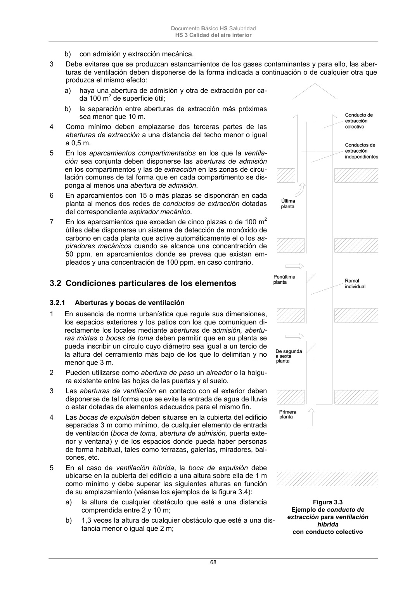

DB-HS · Página 68 · versión 2022-06-14
SHA256: 68df3caacc95f71aee2ec1ba7b2c65ae66155c21e3a8785521b8fdd4fd640d3b · página física 68 de 184 · métodos de encabezado
solo si están cotejados.
Formatos: Markdown · JSON de bloques · PDF p. 68 · imagen PNG
Documento Básico HS Salubridad HS 3 Calidad del aire interior 68 b) con admisión y extracción mecánica. 3 Debe evitarse que se produzcan estancamientos de los gases contaminantes y para ello, las aber- turas de ventilación deben disponerse de la forma indicada a continuación o de cualquier otra que produzca el mismo efecto: a) haya una abertura de admisión y otra de extracción por ca- da 100 m2 de superficie útil; b) la separación entre aberturas de extracción más próximas sea menor que 10 m. 4 Como mínimo deben emplazarse dos terceras partes de las aberturas de extracción a una distancia del techo menor o igual a 0,5 m. 5 En los aparcamientos compartimentados en los que la ventila- ción sea conjunta deben disponerse las aberturas de admisión en los compartimentos y las de extracción en las zonas de circu- lación comunes de tal forma que en cada compartimento se dis- ponga al menos una abertura de admisión. 6 En aparcamientos con 15 o más plazas se dispondrán en cada planta al menos dos redes de conductos de extracción dotadas del correspondiente aspirador mecánico. 7 En los aparcamientos que excedan de cinco plazas o de 100 m2 útiles debe disponerse un sistema de detección de monóxido de carbono en cada planta que active automáticamente el o los as- piradores mecánicos cuando se alcance una concentración de 50 ppm. en aparcamientos donde se prevea que existan em- pleados y una concentración de 100 ppm. en caso contrario. 3.2 Condiciones particulares de los elementos 3.2.1 Aberturas y bocas de ventilación 1 En ausencia de norma urbanística que regule sus dimensiones, los espacios exteriores y los patios con los que comuniquen di- rectamente los locales mediante aberturas de admisión, abertu- ras mixtas o bocas de toma deben permitir que en su planta se pueda inscribir un círculo cuyo diámetro sea igual a un tercio de la altura del cerramiento más bajo de los que lo delimitan y no menor que 3 m. 2 Pueden utilizarse como abertura de paso un aireador o la holgu- ra existente entre las hojas de las puertas y el suelo. 3 Las aberturas de ventilación en contacto con el exterior deben disponerse de tal forma que se evite la entrada de agua de lluvia o estar dotadas de elementos adecuados para el mismo fin. 4 Las bocas de expulsión deben situarse en la cubierta del edificio separadas 3 m como mínimo, de cualquier elemento de entrada de ventilación (boca de toma, abertura de admisión, puerta exte- rior y ventana) y de los espacios donde pueda haber personas de forma habitual, tales como terrazas, galerías, miradores, bal- cones, etc. 5 En el caso de ventilación híbrida, la boca de expulsión debe ubicarse en la cubierta del edificio a una altura sobre ella de 1 m como mínimo y debe superar las siguientes alturas en función de su emplazamiento (véanse los ejemplos de la figura 3.4): a) la altura de cualquier obstáculo que esté a una distancia comprendida entre 2 y 10 m; b) 1,3 veces la altura de cualquier obstáculo que esté a una dis- tancia menor o igual que 2 m; Figura 3.3 Ejemplo de conducto de extracción para ventilación híbrida con conducto colectivo
